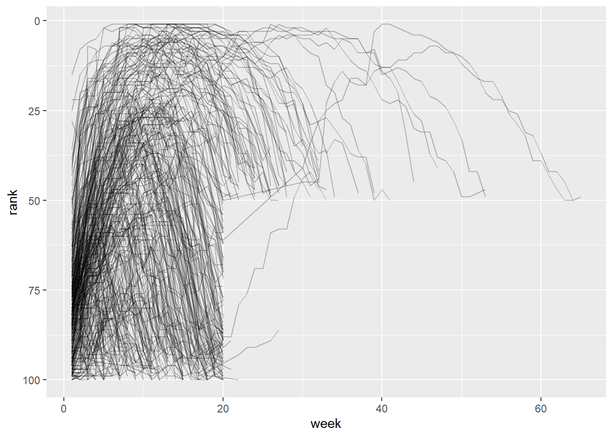

Chapter 8 Chuẩn hóa theo chiều dọc
8.1 Dữ liệu trong tên cột
## # A tibble: 317 × 79
## artist track date.entered wk1 wk2 wk3 wk4 wk5 wk6 wk7 wk8 wk9
## <chr> <chr> <date> <dbl> <dbl> <dbl> <dbl> <dbl> <dbl> <dbl> <dbl> <dbl>
## 1 2 Pac Baby… 2000-02-26 87 82 72 77 87 94 99 NA NA
## 2 2Ge+her The … 2000-09-02 91 87 92 NA NA NA NA NA NA
## 3 3 Doors D… Kryp… 2000-04-08 81 70 68 67 66 57 54 53 51
## 4 3 Doors D… Loser 2000-10-21 76 76 72 69 67 65 55 59 62
## 5 504 Boyz Wobb… 2000-04-15 57 34 25 17 17 31 36 49 53
## # ℹ 312 more rows
## # ℹ 67 more variables: wk10 <dbl>, wk11 <dbl>, wk12 <dbl>, wk13 <dbl>, wk14 <dbl>,
## # wk15 <dbl>, wk16 <dbl>, wk17 <dbl>, wk18 <dbl>, wk19 <dbl>, wk20 <dbl>,
## # wk21 <dbl>, wk22 <dbl>, wk23 <dbl>, wk24 <dbl>, wk25 <dbl>, wk26 <dbl>,
## # wk27 <dbl>, wk28 <dbl>, wk29 <dbl>, wk30 <dbl>, wk31 <dbl>, wk32 <dbl>,
## # wk33 <dbl>, wk34 <dbl>, wk35 <dbl>, wk36 <dbl>, wk37 <dbl>, wk38 <dbl>,
## # wk39 <dbl>, wk40 <dbl>, wk41 <dbl>, wk42 <dbl>, wk43 <dbl>, wk44 <dbl>, …Trong dataset:
: tên nghệ sĩ, ban nhạc.
: tên bài hát.
: ngày bài hát bắt đầu lọt vào bảng xếp hạng Billboard.
: Thứ hạng của bài hát theo từng tuần.
Ở đây, các cột tên là biến tuần trong khi ô giá trị lại là thứ hạng. Để chuẩn hóa dữ liệu này ta sử dụng .
Các tham số trong \texttt{pivot_longer():
: Data frame cần pivot.
: (tidy-select) Các cột cần chuyển về dạng dài.
: Cách sắp xếp các dòng sau pivot.
: Tên cột (hoặc nhiều cột) mới sinh ra từ tên cột ban đầu.
Nếu độ dài = 0 hoặc : không tạo thêm cột.
Nếu độ dài = 1: tạo một cột chứa tên cột gốc.
Nếu độ dài > 1: phải dùng thêm hoặc để tách tên cột.
Đặc biệt:
= bỏ qua thành phần đó trong tên cột.
= phần đó của tên cột sẽ trở thành tên biến mới (ghi đè ).
: Regex để bỏ tiền tố trong tên cột.
: vị trí hoặc regex để tách tên cột.
: regex có nhóm để trích thành phần.
, : Khai báo trước kiểu dữ liệu mong muốn.
, : Hàm để chuyển đổi kiểu dữ liệu sau khi pivot.
: Xử lý tên cột trùng lặp
: Tên cột mới chứa giá trị từ các ô dữ liệu. (Bị bỏ qua nếu dùng ).
: Nếu , bỏ dòng có (chỉ giữ quan sát thực).
## # A tibble: 24,092 × 5
## artist track date.entered week rank
## <chr> <chr> <date> <chr> <dbl>
## 1 2 Pac Baby Don't Cry (Keep... 2000-02-26 wk1 87
## 2 2 Pac Baby Don't Cry (Keep... 2000-02-26 wk2 82
## 3 2 Pac Baby Don't Cry (Keep... 2000-02-26 wk3 72
## 4 2 Pac Baby Don't Cry (Keep... 2000-02-26 wk4 77
## 5 2 Pac Baby Don't Cry (Keep... 2000-02-26 wk5 87
## # ℹ 24,087 more rowsSau dữ liệu, có ba đối số chính:
chỉ định những cột cần được pivot, tức là những cột không phải biến. Đối số này dùng cú pháp giống , nên ở đây ta có thể dùng hoặc .
đặt tên cho biến được lưu trong tên cột, ở đây ta đặt tên biến đó là .
đặt tên cho biến được lưu trong các giá trị ô, ở đây ta đặt tên biến đó là .
Lưu ý rằng trong code, và được để trong dấu nháy kép vì đó là các biến mới ta tạo ra, chúng chưa tồn tại trong dữ liệu khi ta gọi .
Bây giờ ta hãy chú ý đến data frame sau khi được làm dài. Điều gì xảy ra nếu một bài hát nằm trong top 100 ít hơn 76 tuần? Ví dụ, bài của 2 Pac “Baby Don’t Cry”. Kết quả ở trên cho thấy nó chỉ nằm trong top 100 trong 7 tuần, và tất cả các tuần còn lại được điền bằng giá trị thiếu (). Những giá trị này thật ra không đại diện cho quan sát bị thiếu, mà là do cấu trúc của bắt buộc phải có. Vì vậy, ta có thể yêu cầu loại bỏ chúng bằng cách đặt .
billboard |>
pivot_longer(
cols = starts_with("wk"),
names_to = "week",
values_to = "rank",
values_drop_na = TRUE
)## # A tibble: 5,307 × 5
## artist track date.entered week rank
## <chr> <chr> <date> <chr> <dbl>
## 1 2 Pac Baby Don't Cry (Keep... 2000-02-26 wk1 87
## 2 2 Pac Baby Don't Cry (Keep... 2000-02-26 wk2 82
## 3 2 Pac Baby Don't Cry (Keep... 2000-02-26 wk3 72
## 4 2 Pac Baby Don't Cry (Keep... 2000-02-26 wk4 77
## 5 2 Pac Baby Don't Cry (Keep... 2000-02-26 wk5 87
## # ℹ 5,302 more rowsSố lượng hàng bây giờ ít hơn nhiều, cho thấy rằng nhiều hàng chứa đã bị loại bỏ.
Bạn cũng có thể thắc mắc: điều gì xảy ra nếu một bài hát nằm trong top 100 hơn 76 tuần? Với dữ liệu này ta không thể biết được, nhưng có thể đoán rằng các cột bổ sung như , , … sẽ được thêm vào dataset.
Dữ liệu hiện tại đã ở dạng tidy, nhưng ta có thể làm cho việc tính toán sau này dễ dàng hơn bằng cách chuyển đổi giá trị của từ chuỗi ký tự thành số, sử dụng và . Hàm rất tiện lợi vì nó sẽ trích xuất số đầu tiên trong một chuỗi, và bỏ qua toàn bộ phần ký tự khác
billboard_longer <- billboard |>
pivot_longer(
cols = starts_with("wk"),
names_to = "week",
values_to = "rank",
values_drop_na = TRUE
) |>
mutate(
week = parse_number(week)
)
billboard_longer## # A tibble: 5,307 × 5
## artist track date.entered week rank
## <chr> <chr> <date> <dbl> <dbl>
## 1 2 Pac Baby Don't Cry (Keep... 2000-02-26 1 87
## 2 2 Pac Baby Don't Cry (Keep... 2000-02-26 2 82
## 3 2 Pac Baby Don't Cry (Keep... 2000-02-26 3 72
## 4 2 Pac Baby Don't Cry (Keep... 2000-02-26 4 77
## 5 2 Pac Baby Don't Cry (Keep... 2000-02-26 5 87
## # ℹ 5,302 more rowsBây giờ khi đã có tất cả số tuần trong một biến và tất cả giá trị thứ hạng trong một biến khác, ta ở vị trí thuận lợi để trực quan hóa cách thứ hạng của bài hát thay đổi theo thời gian.
billboard_longer |>
ggplot(aes(x = week, y = rank, group = track)) +
geom_line(alpha = 0.25) +
scale_y_reverse()
Ta có thể thấy rằng rất ít bài hát duy trì trong top 100 quá 20 tuần. Với dữ liệu đã được chuẩn hóa ta có thể tạo được Thống kê theo nghệ sĩ (số bài hát, số tuần trụ BXH, rank trung bình)
billboard_longer %>%
group_by(artist) %>%
summarise(
n_songs = n_distinct(track),
total_weeks = n_distinct(paste(track, week)),
avg_rank = mean(rank, na.rm = TRUE)
) %>%
arrange(avg_rank)## # A tibble: 228 × 4
## artist n_songs total_weeks avg_rank
## <chr> <int> <int> <dbl>
## 1 "Santana" 1 26 10.5
## 2 "Elliott, Missy \"Misdemeanor\"" 1 21 14.3333
## 3 "matchbox twenty" 1 39 18.6410
## 4 "N'Sync" 3 74 18.6486
## 5 "Janet" 1 24 19.4167
## # ℹ 223 more rows8.2 Cách hoạt động
Chúng ta muốn bộ dữ liệu mới có ba biến: (đã tồn tại), (tên các cột) và (giá trị trong các ô). Để làm được điều này, chúng ta cần sử dụng trên :
## # A tibble: 6 × 3
## id measurement value
## <chr> <chr> <dbl>
## 1 A bp1 100
## 2 A bp2 120
## 3 B bp1 140
## 4 B bp2 115
## 5 C bp1 120
## # ℹ 1 more row


8.3 Nhiều biến được lưu trong một cột
## # A tibble: 7,240 × 58
## country year sp_m_014 sp_m_1524 sp_m_2534 sp_m_3544 sp_m_4554 sp_m_5564 sp_m_65
## <chr> <dbl> <dbl> <dbl> <dbl> <dbl> <dbl> <dbl> <dbl>
## 1 Afghanist… 1980 NA NA NA NA NA NA NA
## 2 Afghanist… 1981 NA NA NA NA NA NA NA
## 3 Afghanist… 1982 NA NA NA NA NA NA NA
## 4 Afghanist… 1983 NA NA NA NA NA NA NA
## 5 Afghanist… 1984 NA NA NA NA NA NA NA
## # ℹ 7,235 more rows
## # ℹ 49 more variables: sp_f_014 <dbl>, sp_f_1524 <dbl>, sp_f_2534 <dbl>,
## # sp_f_3544 <dbl>, sp_f_4554 <dbl>, sp_f_5564 <dbl>, sp_f_65 <dbl>,
## # sn_m_014 <dbl>, sn_m_1524 <dbl>, sn_m_2534 <dbl>, sn_m_3544 <dbl>,
## # sn_m_4554 <dbl>, sn_m_5564 <dbl>, sn_m_65 <dbl>, sn_f_014 <dbl>,
## # sn_f_1524 <dbl>, sn_f_2534 <dbl>, sn_f_3544 <dbl>, sn_f_4554 <dbl>,
## # sn_f_5564 <dbl>, sn_f_65 <dbl>, ep_m_014 <dbl>, ep_m_1524 <dbl>, …Dataset này, được thu thập bởi Tổ chức Y tế Thế giới (WHO), ghi lại thông tin về chẩn đoán bệnh lao (tuberculosis). Có hai cột vốn đã là biến và dễ diễn giải: và . Tiếp theo đó là 56 cột như , , và . Nếu bạn quan sát các tên cột này đủ lâu, bạn sẽ nhận ra một mẫu chung. Mỗi tên cột được tạo bởi ba phần, được phân tách bằng dấu gạch dưới _ :
Phần thứ nhất: //, mô tả phương pháp chẩn đoán được sử dụng.
Phần thứ hai: /, chỉ giới tính (mã hóa nhị phân trong dataset này).
Phần thứ ba: //////, biểu thị nhóm tuổi (ví dụ = 0–14 tuổi).
Như vậy, trong trường hợp này ta có sáu phần thông tin được ghi trong :
quốc gia
năm
phương pháp chẩn đoán
giới tính
nhóm tuổi
số lượng bệnh nhân trong nhóm.
Để sắp xếp 6 thông tin này vào 6 cột riêng biệt, ta sử dụng với:
một vector cột cho , hướng dẫn tách tên biến gốc thành nhiều phần qua ,và một tên cột cho .
who2 |>
pivot_longer(
cols = !(country:year),
names_to = c("diagnosis", "gender", "age"),
names_sep = "_",
values_to = "count"
)## # A tibble: 405,440 × 6
## country year diagnosis gender age count
## <chr> <dbl> <chr> <chr> <chr> <dbl>
## 1 Afghanistan 1980 sp m 014 NA
## 2 Afghanistan 1980 sp m 1524 NA
## 3 Afghanistan 1980 sp m 2534 NA
## 4 Afghanistan 1980 sp m 3544 NA
## 5 Afghanistan 1980 sp m 4554 NA
## # ℹ 405,435 more rowsMột các khác có thể được sử dụng là sử dụng tham số kết hợp việc sử dụng kĩ thuật phân tích chuỗi để trích xuất thông tin từ biến.
who2 |>
pivot_longer(
cols = !(country:year),
names_to = c("diagnosis", "gender", "age"),
names_pattern = "([a-z]+)_([mf])_(.*)",
values_to = "count"
)## # A tibble: 405,440 × 6
## country year diagnosis gender age count
## <chr> <dbl> <chr> <chr> <chr> <dbl>
## 1 Afghanistan 1980 sp m 014 NA
## 2 Afghanistan 1980 sp m 1524 NA
## 3 Afghanistan 1980 sp m 2534 NA
## 4 Afghanistan 1980 sp m 3544 NA
## 5 Afghanistan 1980 sp m 4554 NA
## # ℹ 405,435 more rows8.4 Dữ liệu và biến nằm trong tên cột
## # A tibble: 5 × 5
## family dob_child1 dob_child2 name_child1 name_child2
## <int> <date> <date> <chr> <chr>
## 1 1 1998-11-26 2000-01-29 Susan Jose
## 2 2 1996-06-22 NA Mark <NA>
## 3 3 2002-07-11 2004-04-05 Sam Seth
## 4 4 2004-10-10 2009-08-27 Craig Khai
## 5 5 2000-12-05 2005-02-28 Parker GracieBộ dữ liệu này chứa thông tin về năm gia đình, với tên và ngày sinh của tối đa hai đứa trẻ. Thách thức mới trong bộ dữ liệu này là tên cột lại chứa tên của hai biến (, ) và giá trị của một biến khác (, với giá trị 1 hoặc 2).
Để giải quyết vấn đề này, ta cần truyền một vector vào đối số , nhưng lần này ta dùng sentinel đặc biệt ; đây không phải là tên của một biến mà là một giá trị đặc biệt cho để thực hiện một hành động khác. Cụ thể, nó sẽ ghi đè đối số thông thường và sử dụng thành phần đầu tiên của tên cột sau khi pivot làm tên biến trong bảng kết quả.
household |>
pivot_longer(
cols = !family,
names_to = c(".value", "child"),
names_sep = "_",
values_drop_na = TRUE
)## # A tibble: 9 × 4
## family child dob name
## <int> <chr> <date> <chr>
## 1 1 child1 1998-11-26 Susan
## 2 1 child2 2000-01-29 Jose
## 3 2 child1 1996-06-22 Mark
## 4 3 child1 2002-07-11 Sam
## 5 3 child2 2004-04-05 Seth
## # ℹ 4 more rows